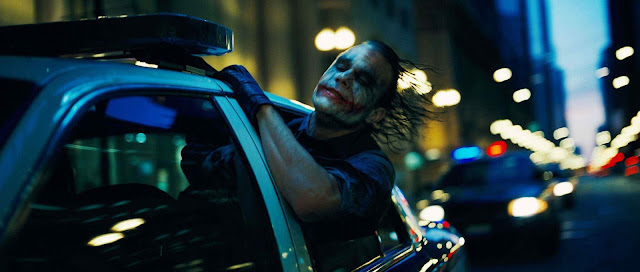

Drama,Ação,Crime
Após dois anos desde o surgimento do Batman (Christian Bale), os criminosos de Gotham City têm muito o
que temer. Com a ajuda do tenente James Gordon (Gary Oldman) e do promotor público Harvey Dent (Aaron
Eckhart), Batman luta contra o crime organizado. Acuados com o combate, os chefes do crime aceitam a
proposta feita pelo Coringa (Heath Ledger) e o contratam para combater o Homem-Morcego.